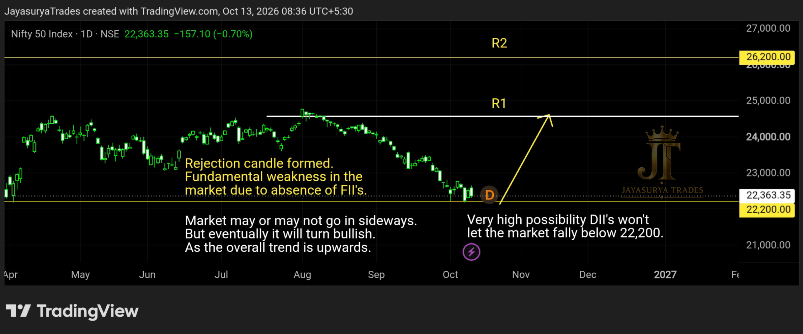

For this Tuesday Market Focus, I am looking at NIFTY 50 and the market’s reaction around the 22,200 support zone. The key question is whether this area continues to attract buying interest and supports a reversal, or whether price needs more time to consolidate.
My chart has formed a rejection around 22,200. In my view, domestic institutional investor (DII) participation could help defend this area, so I see a high possibility of the market attempting to hold above this level. This is a market scenario I am watching, not a guarantee that the level cannot break.
If the rejection holds and price confirms a bullish move, the next focus is the Resistance 1 level marked on my chart.

22,200 — The Key Support and Reversal Zone
The most important level in this analysis is 22,200. Price has formed a rejection around this zone, which suggests that buyers may be responding to the level. I am watching whether this rejection develops into a stronger bullish structure.
My view is that DII participation could provide support around this area and make a sustained move below 22,200 less likely. However, institutional flows can change and technical levels can fail. I will treat the support as a high-probability scenario to monitor, rather than a certainty.
Potential Upside Toward Resistance 1
If 22,200 holds and the rejection is followed by bullish confirmation, the market could move upward toward Resistance 1 (R1), as marked on my chart. The chart is the reference for the exact R1 price level; I am keeping this article aligned with the level shown there.
The bullish scenario depends on price action confirming the move. A rejection candle alone does not guarantee a reversal, so I will watch for follow-through and a developing bullish structure before treating the upside move as established.
Bullish confirmation → Potential move toward chart-marked R1
No confirmation → The market may continue consolidating
Sideways Movement Is Still Possible
Even if the market holds above 22,200, it may not rally immediately. Price could move sideways while the market waits for stronger participation and a clearer directional signal.
In that situation, I would avoid assuming that the rejection must lead straight to an upside rally. The market may need time to build a range before it attempts to move toward R1.
DII Support and FII Participation
The additional factor in this analysis is institutional participation. My view is that DII buying could help support NIFTY 50 around 22,200, which is one reason I consider a rejection and potential reversal from this zone a high-probability possibility. This is my market interpretation, not a confirmed promise that DIIs will prevent a fall.
For a stronger buy rally to develop, additional FII participation may be important. If FII participation improves alongside price confirmation, the market could gain momentum toward R1. If that participation is missing, the market may remain sideways even if 22,200 continues to hold.
What I Am Watching Now
For Traders
The focus is on whether the 22,200 rejection develops into a confirmed bullish structure. If price moves sideways, I would wait for clearer direction rather than force a trade within the range. Any bullish view remains conditional on the market’s actual price action.
For Investors
From a technical perspective, 22,200 is the key zone I am monitoring for support and a possible reversal. The potential upside reference is R1 on the attached chart. Institutional participation may influence the move, but the level and the bullish scenario still need to be assessed against market behaviour.
The Two Scenarios I Am Watching
Bullish Reversal Scenario
If 22,200 holds, the rejection receives follow-through, and price confirms a bullish structure, NIFTY 50 could move upward toward R1 marked on the chart. Additional FII participation could help the rally develop with greater momentum.
Sideways Scenario
If 22,200 holds but buying participation remains limited, the market may continue moving sideways instead of rallying immediately. In this case, I would wait for a clearer breakout or directional structure before drawing a stronger conclusion.
Key Takeaways
- 22,200 is the key support and potential reversal zone in this analysis.
- A rejection has formed around this level.
- In my view, DII participation could help support the market near 22,200, but the level is not guaranteed to hold.
- If bullish price confirmation develops, the market could move toward R1 marked on the chart.
- A sideways range remains possible if additional buying participation is limited.
- Stronger FII participation could help a buy rally gain momentum.
- Price confirmation remains more important than prediction.
The objective is not to predict every movement. It is to watch the 22,200 reaction, understand how institutional participation may affect the market, and wait for price confirmation before acting.
Watch the 22,200 zone.
Look for bullish follow-through.
Keep the sideways scenario in mind.
Let the market confirm the move toward R1.
One day. One market. One focused analysis.
Levels. Structure. Scenarios. Confirmation.
No hype. Just how the market behaves.
Watch. Wait. Confirm.
Risk Disclaimer
This analysis is provided for educational and informational purposes only and should not be considered financial advice or a recommendation to buy or sell any financial instrument.
Trading involves substantial risk. Always conduct your own research and follow your own trading plan and risk-management rules.